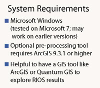

Resource Investment Optimization System
RIOS is a free and open source software tool that supports the design of cost-effective investments in watershed services.
RIOS provides a standardized, science-based approach to watershed management in contexts throughout the world. It combines biophysical, social, and economic data to help users identify the best locations for protection and restoration activities in order to maximize the ecological return on investment, within the bounds of what is socially and politically feasible.
Generalized Tool, Flexible ApproachRIOS was developed through an extensive stakeholder engagement process, including input from more than 11 water funds (watershed investment programs) across Latin America. The tool has been tested in diverse ecological, social and political contexts. Early applications in the Cauca Valley of Colombia resulted in RIOS-designed watershed investments up to six times more effective than typical investment approaches. RIOS enables watershed investors to use a replicable, transparent, and stakeholder-driven approach to evaluate projects within a region or between regions, making it easier to track the places where their investments are most needed and most effective. |

 |